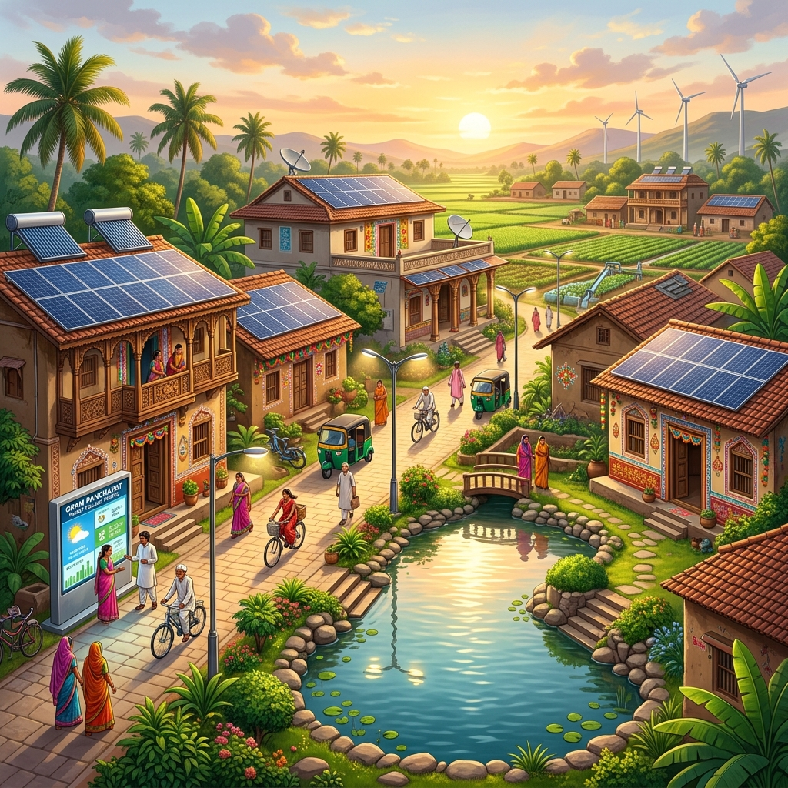
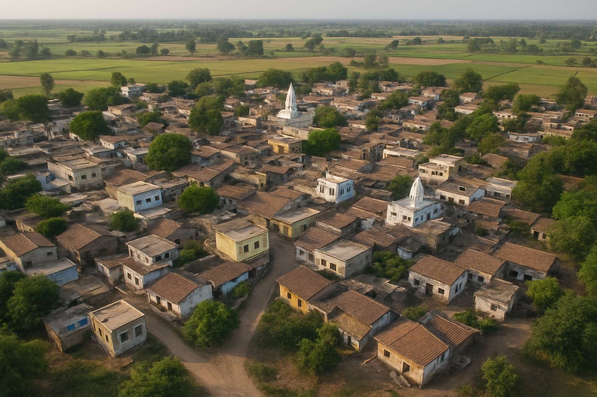
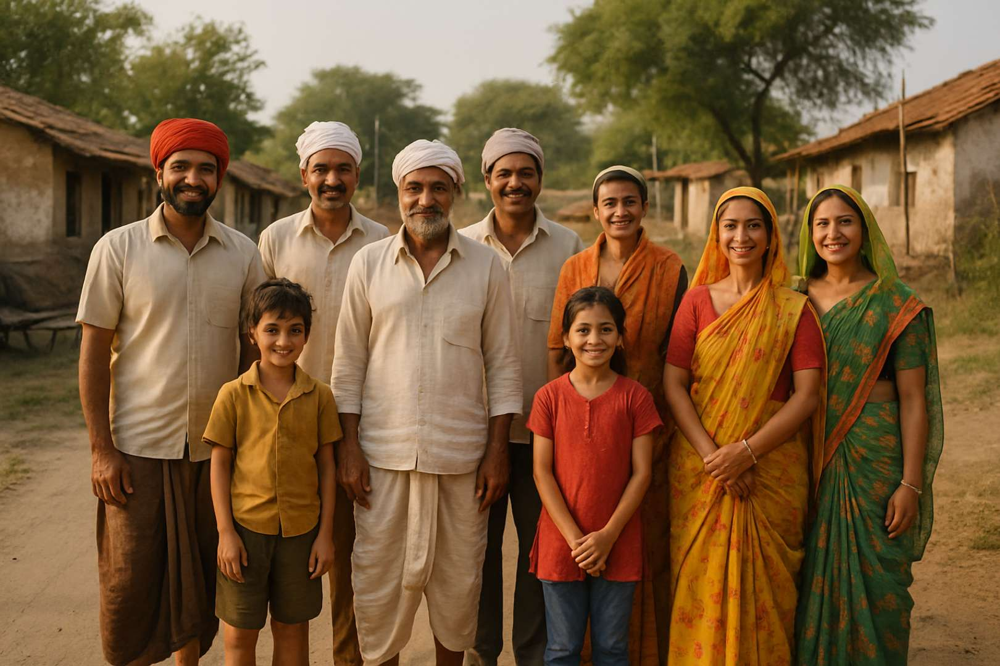

📑 વિષયસૂચિ (Table of Contents)
🌟 મુખ્ય હાઇલાઇટ્સ
ડિજિટલ ગોરાડકા
પરંપરા અને આધુનિક ટેકનોલોજીનો અદભુત સંગમ.
એક ક્લિક પર માહિતી
સરપંચના નંબરથી લઈને ઇમરજન્સી મેડિકલ સેવાઓ સુધી બધું જ ઓનલાઇન.
ગૌરવવંતો ઇતિહાસ
શિવ મંદિર અને લાઈબ્રેરી જેવી સાંસ્કૃતિક ધરોહરોની ડિજિટલ પ્રસ્તુતિ.
📡 પ્રસ્તાવના: બદલાતું ગુજરાત અને ડિજિટલ ક્રાંતિ
જ્યારે આપણે 'ડિજિટલ ઇન્ડિયા' અથવા 'ડિજિટલ ગુજરાત' જેવા શબ્દો સાંભળીએ છીએ, ત્યારે આપણા મગજમાં સૌથી પહેલા મોટા શહેરો, સ્માર્ટ સિટી, આઇટી પાર્ક અને મેટ્રો ટ્રેન જેવા ચિત્રો ઉપસી આવે છે. આપણને એવું લાગે છે કે ટેકનોલોજી અને ઇન્ટરનેટનો સાચો ઉપયોગ માત્ર શહેરી લોકો જ કરી શકે છે. પરંતુ આ માન્યતાને ધરખમ રીતે બદલી નાખી છે બોટાદ જિલ્લાના ગઢડા તાલુકામાં આવેલા એક નાના અને રળિયામણા ગામે, જેનું નામ છે ગોરાડકા.
હા, તમે બિલકુલ સાચું વાંચ્યું છે! આખા ગુજરાત રાજ્યમાં કદાચ ગોરાડકા એકમાત્ર એવું અનોખું ગામ બની ગયું છે, જેણે સમયની સાથે કદમ મિલાવીને પોતાની સત્તાવાર (Official) ડિજિટલ વેબસાઇટ goradka.netlify.app લોન્ચ કરી છે. આ એક એવી ઐતિહાસિક સિદ્ધિ છે, જે મોટા-મોટા શહેરોના સ્માર્ટ પ્રોજેક્ટ્સને પણ ટક્કર આપે તેવી છે. ગોરાડકાએ સાબિત કરી દીધું છે કે જો મનમાં કશુંક નવું કરવાની તમન્ના હોય, તો ગ્રામીણ સંસ્કૃતિના મૂળિયાંને સાચવીને પણ ડિજિટલ યુગના શિખરો સર કરી શકાય છે.
🌳 ગોરાડકા ગામની પૃષ્ઠભૂમિ: પ્રકૃતિ અને સંસ્કૃતિનો સમન્વય

બોટાદ જિલ્લાની ફળદ્રુપ ભૂમિ પર વસેલું ગોરાડકા ગામ તેની શાંતિ, કુદરતી સૌંદર્ય અને ભાઈચારા માટે જાણીતું છે. ખેતી અને પશુપાલન અહીંના મુખ્ય વ્યવસાયો છે, અને અહીંના લોકો ખૂબ જ સરળ, મહેનતુ અને ધાર્મિક પ્રકૃતિના છે. ગામની આસપાસ લીલાછમ ખેતરો અને પવિત્ર મંદિરો આવેલા છે, જે ગ્રામીણ ગુજરાતની સાચી ધરોહર સમાન છે.
પરંતુ આ ગામ માત્ર જૂની પરંપરાઓમાં જ જીવતું નથી. અહીં શિક્ષણ અને પ્રગતિ માટે એક અનોખી ભૂખ છે. ગામના યુવાનો આજે દેશ-વિદેશમાં ટેકનોલોજીના ક્ષેત્રે આગળ વધી રહ્યા છે. આ જ વૈશ્વિક વિચારધારા અને સ્થાનિક સંસ્કૃતિના મિલનમાંથી જન્મ થયો છે "ડિજિટલ ગોરાડકા" ના વિચારનો.
🪞 આ વેબસાઇટ માત્ર એક પેજ નથી, પણ ગામનો 'ડિજિટલ અરીસો' છે
ઘણીવાર મોટી સંસ્થાઓ કે કંપનીઓ પોતાની બ્રાન્ડિંગ માટે વેબસાઇટ બનાવતી હોય છે, પરંતુ એક આખા ગામની વેબસાઇટ બનાવવી અને તેને એટલી આકર્ષક તેમજ ઉપયોગી રાખવી એ એક બહુ મોટો પડકાર છે. ગોરાડકા ગામની આ વેબસાઇટને માત્ર દેખાવ પૂરતી ઊભી કરવામાં નથી આવી, પરંતુ તેને ગામના દરેક વર્ગના લોકોને ધ્યાનમાં રાખીને બનાવવામાં આવી છે.
આ વેબસાઇટ એક એવો ડિજિટલ અરીસો છે, જેમાં જોવાથી ગામની એકતા, અહીંની સુવિધાઓ અને ગામના વિકાસની ઝાંખી એકસાથે જોવા મળે છે. ગામના વડીલો હોય કે વિદેશમાં રહેતા એન.આર.આઈ. (NRI) ભાઈઓ, દરેક વ્યક્તિ આ વેબસાઇટ દ્વારા પોતાના વતન સાથે ૨૪ કલાક જોડાયેલી રહી શકે છે.
⭐ વેબસાઇટની મુખ્ય વિશેષતાઓ અને ગ્રામજનોને થતા ફાયદા
આ વેબસાઇટની અંદર જે રીતે માહિતીની વહેંચણી કરવામાં આવી છે, તે કોઈપણ આઇટી પ્રોફેશનલને આશ્ચર્યમાં મૂકી દે તેવી છે. ચાલો વિગતવાર જાણીએ કે આ વેબસાઇટ પર કઈ-કઈ અદભુત સુવિધાઓ આપવામાં આવી છે:
📞 ૧. તમામ જરૂરી સ્થાનિક સેવાઓ અને કોન્ટેક્ટ ડિરેક્ટરી (Local Directory)
ગામડાઓમાં ઘણીવાર ઇમરજન્સીના સમયે યોગ્ય વ્યક્તિનો ફોન નંબર મેળવવો મુશ્કેલ બની જતો હોય છે. આ વેબસાઇટે આ સમસ્યાનો કાયમી ઉકેલ લાવી દીધો છે. વેબસાઇટ પર ગામની તમામ મહત્વની સેવાઓના જવાબદાર વ્યક્તિઓના નામ અને લાઈવ ફોન નંબર આપવામાં આવ્યા છે:
- ગ્રામ પંચાયત નેતૃત્વ: સરપંચ રાજુભાઈ સોલંકી અને અગ્રણી ગ્રામજન અનિલભાઈ રંગપરા જેવા જવાબદાર લોકોના સીધા સંપર્ક નંબર.
- આરોગ્ય સેવાઓ: કોઈપણ તબીબી કટોકટીના સમયે સંજયભાઈ યાદવ કે આર.પી. સોલંકી જેવા સ્થાનિક તબીબી સહાયકોનો સંપર્ક સેકન્ડોમાં થઈ શકે છે.
- દૂધ ઉત્પાદક સહકારી મંડળી અને ડેરી વ્યવસાય: ડેરી સહકારી મંડળીના પ્રતિનિધિઓ તેમજ ચામુંડા ડેરીના રંગાપરા અંકિતભાઈના નંબર પણ ઉપલબ્ધ છે, જેથી પશુપાલકો અને ગ્રાહકો સીધો વ્યવહાર કરી શકે.
- સામાજિક અને મીડિયા સપોર્ટ: પિન્ટુભાઈ વાલા જેવા સામાજિક કાર્યકરો અને માઢુલી સ્ટુડિયોના પ્રોફેશનલ ફોટોગ્રાફર વિનોદભાઈ સરવૈયાના કોન્ટેક્ટ પણ અહીં મળી રહે છે.
🌦️ ૨. લાઈવ વેધર ફોરકાસ્ટ (Live Weather Integration)
ખેડૂતો માટે હવામાન સૌથી મહત્વનું પરિબળ છે. ગોરાડકાની વેબસાઇટ પર લાઈવ હવામાન (તાપમાન, ભેજનું પ્રમાણ અને પવનની ગતિ) બતાવવાની સાથે-સાથે ૫ દિવસની આગાહી પણ જોવાની સિસ્ટમ ગોઠવવામાં આવી છે. આ સુવિધાથી ખેડૂતો પોતાના પાકની લણણી કે વાવણીનું આયોજન ખૂબ જ સચોટ રીતે કરી શકે છે.
🛕 ૩. સાંસ્કૃતિક અને ધાર્મિક કેન્દ્રોની ઝાંખી
વેબસાઇટ પર ગામના ગૌરવ સમાન સ્થાનો વિશે ખૂબ જ સુંદર અને વિગતવાર માહિતી આપવામાં આવી છે:
પવિત્ર શિવ મંદિર
ગોરાડકાનું શિવ મંદિર એ ગામની આધ્યાત્મિક ચેતનાનું કેન્દ્ર છે. મહાશિવરાત્રી અને પવિત્ર શ્રાવણ માસ દરમિયાન અહીં થતી ઉજવણીઓ, ભજન અને ઉત્સવોનો મહિમા વેબસાઇટ પર સુંદર શબ્દોમાં આલેખવામાં આવ્યો છે.
ગ્રામીણ પુસ્તકાલય (Village Library)
જ્ઞાન વગર વિકાસ અધૂરો છે. ગોરાડકાની અદભુત લાઈબ્રેરી વિશેની માહિતી ડિજિટલ પ્લેટફોર્મ પર મૂકવામાં આવી છે, જે ગામના તેજસ્વી વિદ્યાર્થીઓ અને વાંચનપ્રેમીઓ માટે પ્રેરણા સ્ત્રોત છે.

📍 ૪. લાઈવ લોકેશન અને મેપ (Google Map Integration)
બહારથી આવતા કોઈપણ મહેમાન, સરકારી અધિકારી કે પ્રવાસી માટે ગામના મુખ્ય સ્થળો જેવા કે શિવ મંદિર, તળાવ, શાળા કે મુખ્ય બજાર શોધવા માટે હવે કોઈને પૂછવાની જરૂર નથી. વેબસાઇટ પર આપેલા 'Get Directions' બટન પર ક્લિક કરતા જ લાઈવ ગૂગલ મેપ નેવિગેશન શરૂ થઈ જાય છે.
🏆 આપણે કેમ અલગ છીએ? ગોરાડકાની ડિજિટલ ઓળખ
આજે ગુજરાતના હજારો ગામડાઓમાંથી ગોરાડકા કેમ અલગ તરી આવે છે? કારણ કે ગોરાડકાએ ગ્લોબલ બનીને લોકલ સંસ્કૃતિને સાચવી રાખી છે. સામાન્ય રીતે ગામડાઓ વિશે ઇન્ટરનેટ પર બહુ ઓછી માહિતી ઉપલબ્ધ હોય છે, પરંતુ ગોરાડકાની આ પહેલથી હવે આખા વિશ્વમાં કોઈપણ વ્યક્તિ માત્ર એક ક્લિક કરીને જાણી શકે છે કે આ ગામ કેટલું સમૃદ્ધ અને સંગઠિત છે.
આ વેબસાઇટ ગામના લોકોમાં એક નવી પ્રકારની ડિજિટલ સાક્ષરતા (Digital Literacy) લાવશે. જ્યારે ગામનો સામાન્ય ખેડૂત કે યુવાન પોતાની જ વેબસાઇટ ખોલીને હવામાન જોશે કે કોઈનો નંબર મેળવશે, ત્યારે તેમનામાં ટેકનોલોજી પ્રત્યેનો આત્મવિશ્વાસ વધશે. આ જ સાચો ગ્રામીણ વિકાસ છે.

🔮 ભવિષ્યનું આયોજન: બ્લોગ સેક્શન દ્વારા જ્ઞાનની વહેંચણી
આ વેબસાઇટનું સૌથી મોટું અને અસરકારક પાસું તેનું બ્લોગ સેક્શન (Blog Section) બનવા જઈ રહ્યું છે. આ બ્લોગ માત્ર ઓનલાઇન લેખો પૂરતો મર્યાદિત નહીં રહે, પણ તે ગામના વિચારોની આપ-લે કરવાનું માધ્યમ બનશે. ભવિષ્યમાં આ બ્લોગ સેક્શનમાં નીચે મુજબની માહિતીઓ સતત અપડેટ કરવામાં આવશે:
- 📜 ગામનો ભવ્ય ઇતિહાસ: ગોરાડકા ગામની સ્થાપના કેવી રીતે થઈ? જૂના જમાનામાં ગામની જીવનશૈલી કેવી હતી? વડીલોની પ્રેરણાદાયી વાતો અહીં આલેખવામાં આવશે.
- 🏛️ સરકારી યોજનાઓની સરળ માહિતી: ખેડૂતો, મહિલાઓ અને વિદ્યાર્થીઓ માટે સરકાર તરફથી કઈ નવી યોજનાઓ આવી છે અને તેનો લાભ કેવી રીતે લેવો, તેની સંપૂર્ણ વિગત અહીં ગુજરાતીમાં અપાશે.
- ⭐ ગામના તેજસ્વી તારલાઓનું સન્માન: શિક્ષણ, રમતગમત કે વ્યવસાય ક્ષેત્રે ગામનું નામ રોશન કરનાર દીકરા-દીકરીઓની સફળતાની કહાનીઓ બ્લોગ પર મૂકવામાં આવશે, જેથી અન્ય બાળકોને પણ પ્રેરણા મળે.
- 🎉 ઉત્સવો અને તહેવારોનો લાઈવ અહેવાલ: નવરાત્રીના ગરબા હોય, દિવાળીની રોશની હોય કે જન્માષ્ટમીનો મેળો – ગામના દરેક ઉત્સવના સુંદર ફોટા અને અહેવાલો અહીં શેર કરવામાં આવશે.
👨💻 આ અદભુત પ્રોજેક્ટ પાછળનો યુવા મગજ: ક્રેડિટ સેક્શન
કોઈપણ મોટા ફેરફાર પાછળ કોઈ એક વ્યક્તિની સખત મહેનત અને વિઝન હોય છે. ગોરાડકા ગામને આ આધુનિક ડિજિટલ ભેટ આપવા પાછળ ગામના જ વતની અને પ્રોફેશનલ એસ.ઇ.ઓ. એક્સપર્ટ તેમજ ડેવલપર તુષાર સુતરીયા (Tushar Sutariya) નો મુખ્ય હાથ છે. તેમણે પોતાના વ્યવસાયિક કૌશલ્યનો ઉપયોગ પોતાના વતનના ઉત્થાન માટે કર્યો છે, જે આજે દરેક યુવાન માટે એક ઉત્કૃષ્ટ ઉદાહરણ છે. તેમણે આ વેબસાઇટ સંપૂર્ણપણે નિઃસ્વાર્થ ભાવે, ગામ પ્રત્યેના પ્રેમને કારણે તૈયાર કરી છે.
🤝 તમારો સાથ અને સહકાર: આ વેબસાઇટ આપણી છે!
આ વેબસાઇટ આખા ગોરાડકા ગામની પોતાની મિલકત છે. આ પ્લેટફોર્મને વધુ સમૃદ્ધ, સુંદર અને ઉપયોગી બનાવવાની જવાબદારી આપણા દરેક ગ્રામજનની છે. જો તમારી પાસે:
- ગામના કોઈ ઐતિહાસિક કે સુંદર કુદરતી દ્રશ્યોના ફોટા હોય,
- ગામના વિકાસ માટેના કોઈ સારા વિચારો કે સૂચનો હોય,
- અથવા બ્લોગમાં મૂકવા જેવી કોઈ ઉપયોગી માહિતી હોય,
તો તમે નીચે આપેલા માધ્યમો દ્વારા સીધો એડમિન ટીમનો સંપર્ક કરી શકો છો.
📞 સંપર્ક વિગતો (Contact for More Details):
ડેવલપર અને એડમિન: તુષાર સુતરીયા
📱 ફોન નંબર: 8780805275
📧 ઇમેઇલ: sutariyatushar41@gmail.com
✨ ઉપસંહાર
ગામના તમામ ભાઈઓ-બહેનો અને મિત્રોને નમ્ર વિનંતી છે કે, આ બ્લોગ અને આપણી વેબસાઇટની લિંક goradka.netlify.app ને તમારા વોટ્સએપ ગ્રુપ, ફેસબુક અને ઇન્સ્ટાગ્રામ પર વધુમાં વધુ શેર કરો. દુનિયાને બતાવી દો કે જ્યારે વાત પ્રગતિ અને ટેકનોલોજીની આવે, ત્યારે "ગોરાડકા એટલે આખા ગુજરાતમાં નંબર વન!"
🏡 આપણું ગામ, આપણું ગૌરવ – ડિજિટલ ગોરાડકા! 🏡